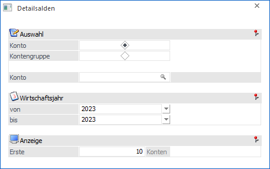
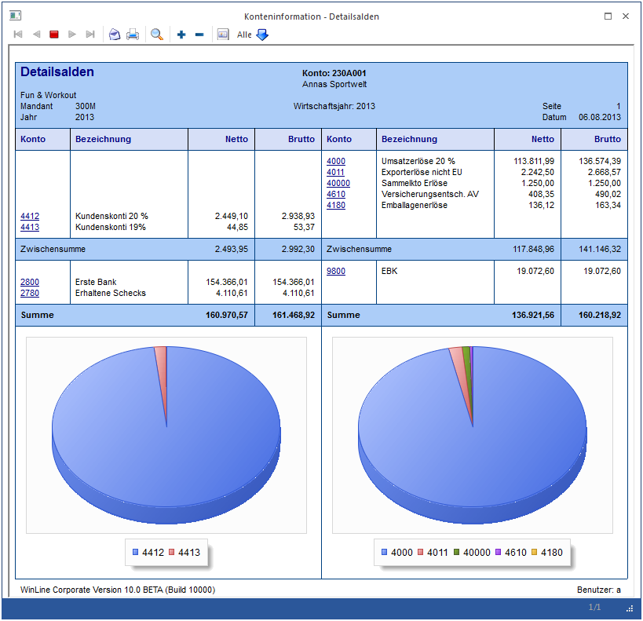

Über den Menüpunkt…
1 WinLine INFO
1 Info
1 Detailsalden
… kann man sich die Auswertung der Detailsalden ausgeben lassen.

Ø Auswahl
An dieser Stelle kann definiert werden, ob die Liste für ein Konto oder Kontengruppen ausgegeben werden. Nachfolgend muss das Objekt der Ausgabe gewählt werden (Konto bzw. Gruppe).
Ø Wirtschaftsjahr von / bis
Auswahl des Wirtschaftsjahres bzw. der Wirtschaftsjahre für die die Auswertung erstellt werden soll.
Ø Anzeige
Wenn eine Auswahl für ein Debitorenkonto eingegeben wurde, so kann hier definiert werden, wie viele Umsatzkonten des Debitors angezeigt werden sollen. Alle restlichen Umsatzkonten werden summiert mit einer Restsumme angezeigt.
Beispiel
Nach Eingabe der gewünschten Auswahl werden die Informationen sowohl in Zahlen als auch in einer Grafik dargestellt.

Buttons

Ø Ausgabe Bildschirm
Mit Hilfe des Buttons "Ausgabe Bildschirm" oder der Taste F5 wird die Auswertung am Bildschirm ausgegeben.
Ø Ausgabe Drucker
Durch Anwahl des Buttons "Ausgabe Drucker" wird die Auswertung am Drucker ausgegeben.
Ø Ende
Durch Drücken des Buttons "Ende" bzw. der Taste ESC wird das Fenster geschlossen.
Ø Voreinstellung speichern
Durch Anwahl dieses Buttons erfolgt eine benutzerspezifische Speicherung aller im Fenster getätigten Einstellungen. Diese sogenannten "Voreinstellungen" können jederzeit wieder abgerufen werden und ermöglichen dadurch ein schnelleres und zielorientierteres Arbeiten (nähere Informationen entnehmen Sie bitte dem Kapitel "Die Voreinstellungen").